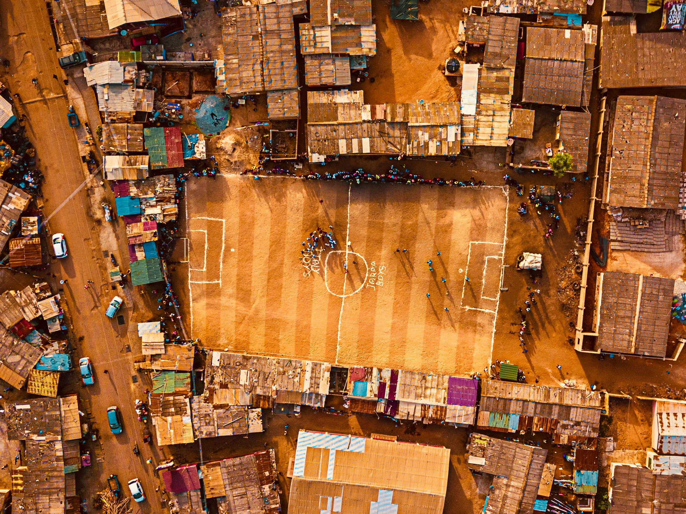

Facilitating access to financial applications in informal settings in four Ghanaian dialects: Akuapem Twi, Ashante Twi, Fante and Ga.

This speech dataset for the Ghanian languages Akan (Akuapem Twi, Asante Twi, Fante) and Ga includes 104,000 utterances (speech) across the four dialects/languages with approximately 200 speakers per dialect/language. This amounts to about 148 hours of speech in total. The dataset was developed to support the development of financial applications in native Ghanaian languages to allow illiterate and semi-literate people to fully benefit from digital financial services. Secondly, it aims to answer research questions related to domain-specific vs. general-purpose dataset development, dialects, as well as NLP system development in low resource settings. Overall, a total of 83,829 audios were recorded from which the datasets were published and made publicly accessible.
Data characteristics
The data is freely available for use based on the provided open source license and courtesy the funding from Lacuna Fund. We performed a stratified random sampling (5%) of the data for each language and reviewed it to get the following quality assessments.
0.1% of the Ga audios were of low quality
1.3% of the Fanti audios were of low qaulity.
1.6% of the Asanti Twi audios were of low quality.
2.8% of the Akuapem Twi audios were of low quality.
Low quality means that what the user recorded did not match the given prompt either because there was a truncation or the recording was totally different from the prompt.
How to use
The dataset might be used to devise more inclusive banking platforms that better understand users in in four Ghanaian dialects: Akuapem Twi, Ashante Twi, Fante and Ga. It can thereby help to achive more financial inclusion.
Datasets
About
Powered by / Provided by: Ashesi University, Nokwary Technologies
Catalyzed by: Lacuna-Fund / Meridian (Climate-call) & FAIR Forward - AI for All, GIZ
Financed by: BMZ
Authors: Elikplim Sabblah, Balthas Seibold
Contact: Dennis Asamoah Owusu (dowusu@ashesi.edu.gh)